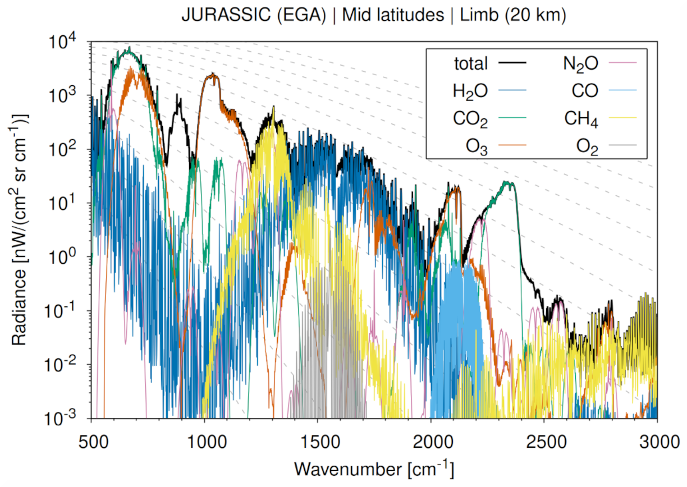

Welcome to JURASSIC!
The Juelich Rapid Spectral Simulation Code (JURASSIC) is a fast infrared radiative transfer model for the analysis of atmospheric remote sensing measurements.
Designed specifically for atmospheric scientists and remote-sensing experts, JURASSIC delivers fast, accurate, and scalable infrared radiative transfer simulations. It is particularly well suited for large data volumes and high-performance computing (HPC) environments, enabling efficient processing without compromising physical accuracy.
JURASSIC supports the simulation and interpretation of infrared spectra across a wide range of atmospheric conditions, making it a powerful tool for both research and operational applications.

Features
JURASSIC provides a comprehensive and efficient framework for infrared radiative transfer simulations, offering key capabilities to support research, operational, and development workflows:
-
Efficient radiative transfer approximations: JURASSIC implements the Emissivity Growth Approximation (EGA) and the Curtis–Godson Approximation (CGA) to model infrared radiative transfer. These methods enable rapid yet accurate simulations of atmospheric radiances and transmittances across a broad spectral range.
-
High-fidelity spectroscopy via lookup tables: Band transmittances are derived from pre-calculated lookup tables based on detailed line-by-line spectroscopy. This approach maintains spectroscopic accuracy while largely reducing computational cost, making the model suitable for large-scale and near-real-time applications.
-
Optimal estimation retrieval framework: In addition to forward modelling, JURASSIC includes an optimal estimation retrieval module for inverse modelling of atmospheric state variables. This enables the derivation of geophysical parameters such as temperature or trace gas volume mixing ratios from observed radiances, providing a complete forward–inverse modelling system within the same framework.
-
Flexible configuration and modular design: The model supports customizable spectral bands, instrument configurations, and atmospheric input fields, allowing users to integrate JURASSIC into diverse workflows and existing analysis pipelines.
-
Validated against established reference models: The model has undergone extensive benchmarking and intercomparison studies with leading radiative transfer codes such as KOPRA, RFM, and SARTA, ensuring reliable performance and scientific credibility across a wide range of atmospheric conditions.
-
Parallel execution for HPC environments: JURASSIC supports workflow-level parallelism, OpenMP acceleration across the tool suite, and MPI-based task distribution for retrieval workloads. This enables efficient execution on multicore CPUs and HPC clusters for large datasets and campaign-style processing.
-
Open source and community oriented: JURASSIC is distributed under the GNU General Public License (GPL), fostering transparency, collaboration, and community-driven development within the atmospheric and remote sensing research community.
Getting started
If you are new to JURASSIC, start with the Quickstart, which walks you through installation, basic configuration, and a first simulation.
Citation
If you use JURASSIC in your research, please cite the relevant publications listed in the References.
Contact
We are interested in sharing JURASSIC for research applications. Please do not hesitate to contact us, if you have any questions or need support.
Dr. Lars Hoffmann, l.hoffmann@fz-juelich.de
Jülich Supercomputing Centre, Forschungszentrum Jülich